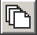
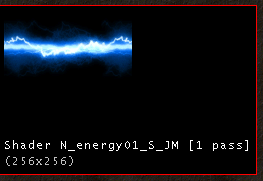

UDN
Search public documentation:
TextureBrowserReferenceJP
English Translation
한국어
Interested in the Unreal Engine?
Visit the Unreal Technology site.
Looking for jobs and company info?
Check out the Epic games site.
Questions about support via UDN?
Contact the UDN Staff
한국어
Interested in the Unreal Engine?
Visit the Unreal Technology site.
Looking for jobs and company info?
Check out the Epic games site.
Questions about support via UDN?
Contact the UDN Staff
テクスチャ ブラウザと UTX アニメーション パッケージを使用する
本書の概要：テクスチャ ブラウザおよび.UTX パッケージのインポートのための包括的リファレンスです。 _本書の変更記録：コンテンツの作成のために Tom Lin (DemiurgeStudios?) により最後に更新。原著者は、Tom Lin (DemiurgeStudios?)。はじめに
.UTX ファイルは、 テクスチャや、テクスチャ（コンバイナやシェーダー）から抽出されたファイルのグループのためのリポジトリです。これらのファイルのためのブラウザは、単純に保存する以上の機能を持ちますが、アルファ チャンネル、パニングなどの操作が考慮されます。特にテクスチャ アーティストは、テクスチャ ブラウザに相当時間を費やすでしょう。シェーダー クリエータも同様です。ブラウザのレイアウト

- 1: プルダウン メニュー. ボタンの機能が複製されます。ときには拡張されることもあります。T
- 2: ブラウザのタブです。もちろん、_テクスチャ_ を選択します。
- 3: ツールバー ボタン. より重点的に使用される機能がここにあります。
- 4: タブ. パッケージ管理用タブ/ボタン。
- 5: メイン テクスチャ表示ウィンドウ
- 6: 現在のパッケージのための名前フィルター
プルダウン メニュー
ファイル
インポート
パッケージにさらにテクスチャが追加されます。
- パッケージ: インポートするパッケージの名前です。
- グループ: テクスチャが分類されるパッケージ内のグループです。グループを希望しない場合、このフィールドはブランクにしておくことができます。T
- 名前: テクスチャに与えられる名前です。インポートされたテクスチャのファイルネームは、インポートに変更できることを覚えておいてください。
- マスク（Masked）: このチェックボックスは機能しないように見えます。テクスチャのアルファ/マスク プロパティを変更したい場合は、プロパティ エリアで行う必要があります。
- ミスマッピ（MipMaps）を生成する: これはデフォルトでチェックされています。これにより、遠くのテクスチャがぼやけて見えるため、テクスチャのアーチファクトもより不明瞭になります。
- Detail Hack?: ディテール テクスチャを作成している場合は、これをチェックする必要があります。
エクスポート（右クリック）
これは機能しません。このオプションは、テクスチャを右クリックしたときにも現れます。編集
プロパティ（右クリック）
これにより、テクスチャ プロパティ ウィンドウが立ち上がり、ボタンの機能をレプリケートします。複製（右クリック）
これにより、テクスチャの別のコピーが作成されます。このオプションを選択すると、新しいパッケージとグループを作成し、テクスチャを再命名する能力が与えられます。またこのコピーを既存のパッケージに入れることもできます。パッケージ全体をロードしたことを確認してください。再命名（右クリック）
これにより、選択したテクスチャを新しいパッケージまたは新しいグループに移動できます。またテクスチャに再命名できます。レベルからの削除（右クリック）
適用されたテクスチャのあるレベルのすべてのBSPからテクスチャを削除します。カル（Cull）の使用されないテクスチャ
レベルが保存されるとき、すべてのバックフェーシング テクスチャが削除されます。これらのテクスチャは、プレーヤからは見えませんが、カルされないと、ロードされてメモリを食います。パッケージ全体をロードする
パッケージからすべてのテクスチャをブラウザにロードします。この機能は、ボタンで複製されます。Detail Hack （右クリック）
パッケージにある既存のテクスチャからディテール テクスチャを作成している場合、警告ウィンドウが現れます。「このプロセスにより、テクスチャのミップマッピが変更され、取り消しできません。」テクスチャを置換する
ワールドのテクスチャをスワップアウトし、別の指定されたテクスチャと置換します。 粗っぽく見えますか。前の/次の グループ
グループの間をナビゲートします。ボタン機能をレプリケートします。削除（右クリック）
パッケージからテクスチャを完全に削除します。表示
テクスチャを異なるスケールで見ることができます。ツール
圧縮（R）：テクスチャに適用される DirectX テクスチャ圧縮のレベルを変更できます。少なくとも理論上は。粗っぽいですか。フィルター
これにより、パッケージにある異なるタイプのマテリアルを選択的に表示することができます。「使用中」フィルター
これにより、異なるタイプのレベル ジオメトリに適用されるテクスチャを選択的に表示できます。この結果を見るには、メイン テクスチャ ウィンドウの「使用中」タブにする必要があります。ツールバー ボタン
これらのボタンには、通常プルダウン メニューから使用される機能のいくつかがあります。パッケージを開く
.UTX パッケージが、まだパッケージのドロップダウン リストにロードされていない場合は、このボタンを使用して開けることができます。パッケージを保存する
自明ですね。パッケージを変更する場合は、必ず保存してください。エディタでレベルを実行する前に保存しないのは、良くあるミスです。テクスチャのプロパティ
プロパティ ボタンをクリックすると、テクスチャ プロパティ ウィンドウが現れます。
ボタン
これについては、別の文書で取り上げます。詳細は、マテリアル チュートリアル を参照してください。アニメーション
これらのプロパティによって、テクスチャを使用したアニメーションの作成をコントロールします。テクスチャ アニメーションは、循環する一連のテクスチャです。各テクスチャでは、アニメーションの次のフレームになるテクスチャである「AnimNext（次のアニメーション）」フレームが定義されます。AnimNext（次のアニメーション）
次ぎにプレイされるアニメーションのフレームであるテクスチャです。MaxFrameRate（最大フレームレート）
1秒当たりフレーム数で、アニメーションがプレイされる最高速度MinFramRate（最低フレームレート）
1秒当たりフレーム数で、アニメーションがプレイされる最低速度PrimeCount（プライム カウント）
アニメーションがスタートする地点のテクスチャのアニメーションへのフレーム数。例えば、15フレームのアニメーションで、もし、PrimeCount が5にセットされると、フレーム 5 からプレイをスタートします。この機能は、すべてのアニメーション化されたテクスチャに作用します。マテリアル
FallbackMaterial（フォールバック マテリアル）
ビデオカードがプライマリ マテリアル効果をサポートしない場合の、バックアップ マテリアルです。 フォールバックを機能させたい場合は、エディタ（メニュー）で[レンダー エミュレーション] のスイッチをオンにし、低モデルのビデオカードを持っているかのように動作するようにゲームする（「renderemulate gf2」コンソール コマンド）ことができます。フォールバックを指定しない場合は、バブル テクスチャにフォールバックします。 .UTX ブラウザのこのセクションについては、他の文書でも取り上げられています。詳細は、「マテリアル チュートリアル」を参照してください。品質
bHighColorQuality
これは古いものです。意味がありません。無視してください。bHighextureQuality
これは古いものです。意味がありません。無視してください。サーフェス
bAlphaTexture
テクスチャが、8ビット アルファ チャンネル（256段階の透明度）を持つ場合は、これを 真 にセットする必要があります。bMasked
テクスチャが 1 ビット アルファ チャンネル（2段階の透明度）を持つ場合は、これを 真 にセットする必要があります。bAlphaTexture と bMasked は、同時に 真 にセットできますが、テクスチャは、マスクが付いているように処理されることを覚えておいてください。。bTwoSided
テクスチャが、両サイドから見えるジオメトリに適用される場合（岬など）は、これを 真 にセットしてください。これを使用するときにはパフォーマンス インパクトがありますから、無差別にスイッチをオンにしないように注意してください。テクスチャ
ディテール
このフィールドによって、テクスチャを「ディテール テクスチャ」としてセットできます。これは、既存のテクスチャの上に置かれる修飾レイヤーです。サーフェスに接近したときのみ現れ、拡大して見られたときにテクスチャをより複雑に見せるのに役立ちます。これには、テクスチャの RGB レイヤーが使用され、アルファ チャンネルは使用されません。ディテール スケール
デフォルトのディテール スケールは、8 です。これは、ペアレント テクスチャが一度描かれる毎に、ディテール テクスチャが、垂直に8回、水平に8回描かれることを意味します。ディテール スケールをペアレント テクスチャに対して必ず適切にセットしてください。おそらくペアレント テクスチャは非常に小さいので、そのような場合にはペアレントのインスタンス毎に 8x8 回ディテール テクスチャを描きたくないことがあるかもしてません。LODSet
これは、テクスチャのフィルタリングをコントロールすることを目的とするもので、ユーザー定義が可能です。NormalLOD
このフィールドは無視してください。パレット
パレット化された（P8）テクスチャ用のパレット オブジェクトです。触れる必要はありません。心配は無用ですUClamp
繰り返されるか、またはロックされたテクスチャのサイズUClampMode
これによって、テクスチャ ラッピング/リペティションが可能かどうかがセットされます。X 軸上で機能します。VClamp
繰り返されるか、ロックされたテクスチャのサイズ。VClampMode
これによって、テクスチャ ラッピング/リペティションが可能かどうかがセットされます。Y 軸上で機能します。TextureFormat
フォーマット
これにより、テクスチャが保存されるときの圧縮タイプが指示されます。圧縮タイプの詳細は、「Unreal テクスチャリング」文書を参照してください。パッケージ全体をロードする

テクスチャ ブラウザは、いくぶん直感的でないことが時々あります。.UTX パッケージがロードされるとき、パッケージのテクスチャすべてが必ずしも表示されるとは限りません。使用中のテクスチャのみが表示されます。パッケージにあるすべてのテクスチャを強制的に表示するには、このボタンを使用してください。前のグループ
 これにより、パッケージにある利用可能なすべてのグループを前にナビゲートします。また、プルダウンを使用してグループをナビゲートすることもできます。
これにより、パッケージにある利用可能なすべてのグループを前にナビゲートします。また、プルダウンを使用してグループをナビゲートすることもできます。
Next Group
次のグループ
 これにより、パッケージにある利用可能なすべてのグループを次へナビゲートします。また、プルダウンを使用してグループをナビゲートすることもできます。
これにより、パッケージにある利用可能なすべてのグループを次へナビゲートします。また、プルダウンを使用してグループをナビゲートすることもできます。
タブ
フル
現在開かれているテクスチャ パッケージのコンテンツがすべて、ここに開かれます。パッケージ名
このパッケージ フィールドは、個々の.UTX ファイル（テクスチャ パッケージ）に関連します。プルダウン リストによって、パッケージ間を素早くナビゲートできます。グループ名
テクスチャを.UTX にインポートすると、.UTX パッケージ内のグループに割り当てるオプションが提供されます。これにより、パッケージをより論理的に分類できます。同じ組織レベルのすべてのテクスチャが無秩序に見えるのとは対照的です。! ボタン
これは、リアルタイムのプレビュー ボタンです。これにより、テクスチャのベース レイヤー上に追加レイヤーを置いた効果を伴うテクスチャの結果を見ることができます。例えば、テクスチャは、添付されたパナーを持つことがあり、ブラウザでアニメーション化されます。
すべてのボタン
 このボタンによって、異なるすべてのグループに渡って広がってロードされたすべてのテクスチャを表示します。
このボタンによって、異なるすべてのグループに渡って広がってロードされたすべてのテクスチャを表示します。